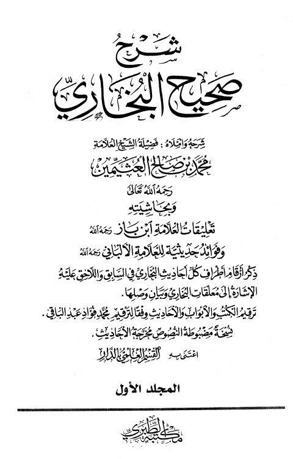

Downloads need an internet connection.
شرح صحيح البخاري بتعليقات ابن باز وفوائد حديثية للألباني
Authors: محمد بن صالح العثيمين
Editors: القسم العلمي بالدار
Publishers: مكتبة الطبري للنشر والتوزيع
**▫️ العنوان: شرح صحيح البخاري بتعليقات ابن باز وفوائد حديثية للألباني** ▪️ المؤلف: #محمد_بن_صالح_العثيمين ▫️ المحقق: #القسم_العلمي_بالدار ▪️ الناشر: #مكتبة_الطبري_للنشر_والتوزيع ▫️ تاريخ النشر: 1429هـ 2008م ▪️ بلد النشر: القاهرة، #مصر ▫️ الطبعة: 1 ▪️ عدد الأجزاء: 8 ▫️ الصفحات: 5168 ▪️ نوع الوعاء: #كتاب ▫️ التصنيف الرئيسي: #الحديث_وعلومه ▪️ التصنيف الفرعي: #الكتب_الستة ۪